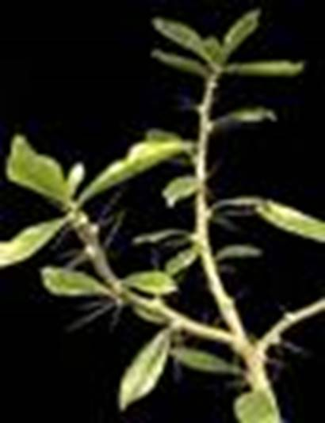

В зависимости от условий, у листьев может изменяться количество устьиц, толщина кутикулы, количество хлоропластов.
Экология – наука об отношениях живых организмов и их сообществе между собой и окружающей средой.
Экологические факторы (факторы среды) – условия или элементы среды обитания.
Листья растений влажных мест обитания крупные, широкие, с большим количеством устьиц (монстера, бегония).
Листья растений засушливых мест обитания маленькие, узкие, с небольшим количеством устьиц. Имеют толстую кутикулу, густое опушение, восковой налет.
Склерофиты (см. Рис. 1) – засухоустойчивые растения, обладающие жесткими стеблями и листьями. Хорошо приспособлены к засушливым условиям за счет сильного развития механических тканей листа. Без вреда переносят потерю до 25% жидкости тканей.
Рис. 1. Склерофит
Суккуленты (см. Рис. 2) – растения, запасающие воду в видоизмененных сочных листьях или стеблях. Растут в солнечных местах. Листья светло-зеленые, серые, что связано с необходимостью отражать часть солнечных лучей (цинерария).
Рис. 2. Суккулент
У теневыносливых растений паренхима состоит из 2-3 слоев неплотно прилегающих клеток. Крупные хлоропласты практически не затеняют друг друга. Листья тонкие, темно-зеленого цвета (ландыши).
Сциофиты – тенелюбивые растения. Нуждаются в рассеянном солнечном свете. При попадании на яркий свет могут получить ожоги или погибнуть.
У растений открытых мест обитания паренхима листа содержит несколько слоев полотно прилегающих друг к другу столбчатых клеток. Листья светлые (кувшинка).
Гелиофиты – светолюбивые растения. Приспособлены к жизни на открытых, сильно освещенных солнцем участках. Плохо переносят длительное затенение. Для хорошего роста нуждаются в интенсивном освещении.
Комнатные растения
Рассмотрите несколько комнатных растений. Подумайте об условиях их произрастания на родине. Сделайте выводы, обоснуйте.
Сделайте поперечные срезы листьев алоэ, традесканции, фиалки. Рассмотрите и зарисуйте. Некоторые эпифиты имеют слабо развитую корневую систему либо не имеют ее вообще. Они впитывают воду и минеральные вещества из пыли и воздуха при помощи листьев.
Эти закономерности характерны для растений одного вида и даже для разных листьев одного растения.
Листовая мозаика – результат неравномерного роста листьев. Литься минимально перекрывают друг друга, в связи с чем они различны по форме и величине. Она позволяет растению наиболее эффективно использовать падающий на него солнечный свет.
Гетерофилия – разнолистность, присутствие на одном растении листьев, существенно отличающихся друг от друга по форме. Характерна для водных и полуводных растений: стрелолиста, водяного лютика, веха ядовитого (см. Рис. 3). Их подводные листья по форме резко отличаются от надводных.
Рис. 3. Водные и полуводные растения
Также геторофилия встречается у шелковицы (см. Рис. 4), оленьего рога (его листья образуют своеобразную чашу, где при перегнивании веток и листьев других растений, образуется почва, в которой расположены корни этого папоротника).
Рис. 4. Шелковица
Выделяют верхушечную, срединную и низовую формацию листьев. Листки низовой формации расположены в земле или под землей, защищают почки восстановления многолетних растений. Срединной формации – выполняют функцию фотосинтеза. Верхушечной – защищают соцветия, могут быть ярко окрашены, привлекая насекомых (иван-да-марья).
Колючки – видоизменения листа, которые препятствуют поеданию растения животными (барбарис) либо уменьшают испарение воды (кактусы).
В засушливый сезон некоторые растения (акация) могут сбрасывать листья, оставляя вместо них лишь черешки, что позволяет снизить испарение воды.
Усики (см. Рис. 5) – видоизменение листа, которое позволяет ему прикрепляться к опоре и выносит листья к свету (горох).
Рис. 5. Усики гороха
Листья насекомоядных растений приспособлены для переваривания насекомого. Насекомоядные растения произрастают на почвах, бедных минеральными веществами, что компенсируют питанием насекомыми (венерина мухоловка, росянка (см. Рис. 6)).
Рис. 6. Росянка – насекомоядное растение
К клейким волоскам росянки прилипают небольшие насекомые, лист сворачивается, и начинается разложение животного.
Водозапасающие листки (алоэ) удерживают влагу, которую растение использует во время засухи.
Покровные чешуйки почек, луковиц, корневища выполняют защитную функцию.
Насекомоядные растения
Многие растения преобразуют листья в ловчие кувшины (см. Рис. 7) (саррацения, дарлингтония, нипентос).
Рис. 7. Ловчие кувшины насекомоядных растений
Кувшинчик имеет скользкую внутреннюю поверхность, внутри может скапливаться дождевая вода. Попавшее насекомое сгнивает в этой воде.
Листья некоторых примитивных кактусов не превращены в колючки (см. Рис. 8) (переския).

Рис. 8. Переския, примитивный кактус
Во время засухи листья опадают. Кактусы обитают в тропических лесах южной Америки.
У степных злаков (ковыль (см. Рис. 9)) узкие листья с устьицами наверху. При засухе лист сворачивается в трубку, устьицами вовнутрь.
Рис. 9. Ковыль
Список литературы
1. Биология. Бактерии, грибы, растения. 6 кл.: учеб. для общеобразоват. учреждений / В.В. Пасечник. – 14-е изд., стереотип. – М.: Дрофа, 2011. – 304 с.: ил.
2. Тихонова Е.Т., Романова Н.И. Биология, 6. – М.: Русское слово.
3. Исаева Т.А., Романова Н.И. Биология, 6. – М.: Русское слово.
Дополнительные рекомендованные ссылки на ресурсы сети Интернет
1. Myblog-bio.blogspot.com (Источник).
2. Beaplanet.ru (Источник).
3. Estnauki.ru (Источник).
Домашнее задание
1. Биология. Бактерии, грибы, растения. 6 кл.: учеб. для общеобразоват. учреждений / В.В. Пасечник. – 14-е изд., стереотип. – М.: Дрофа, 2011. – 304 с.: ил. – с. 122, задания и вопросы 2, 3, 5 (Источник)..
2. Какие существуют видоизменения листьев? Каково их значение?
3. Что такое гетерофилия? Приведите пример.
4. * Сравните листья растений в вашем дворе, растущих на ярком солнце, и комнатных растений между собой. Чем они отличаются? Чем вызваны такие изменения?